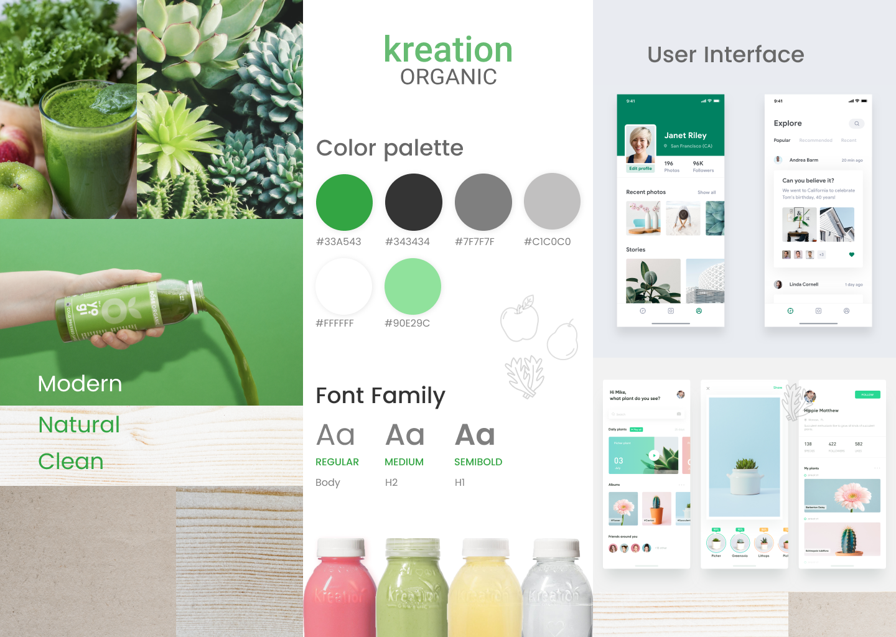
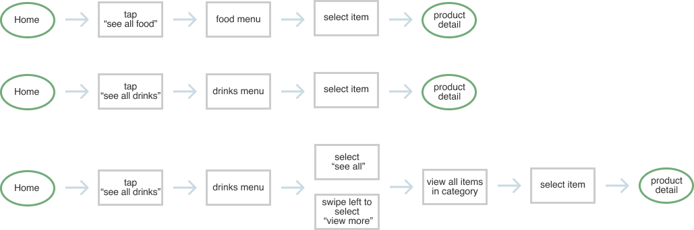
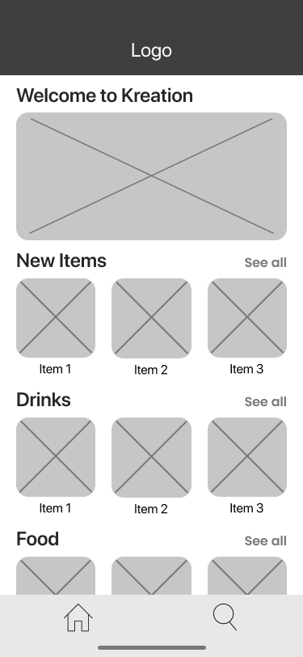
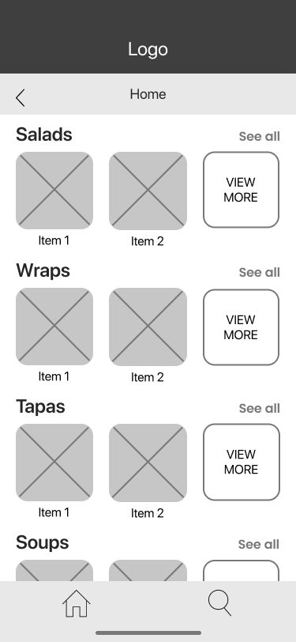
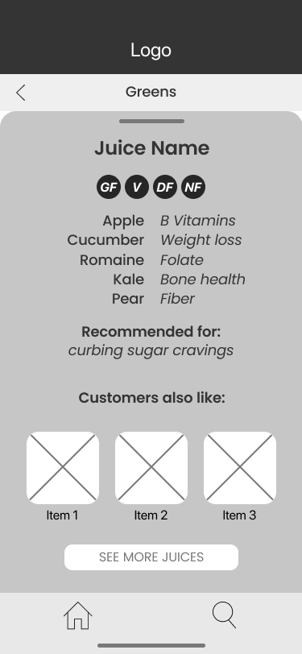
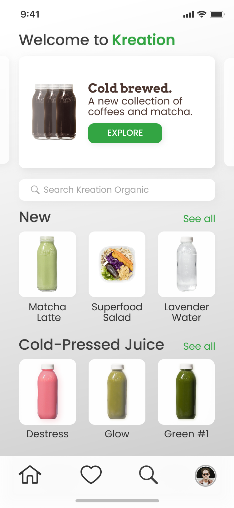
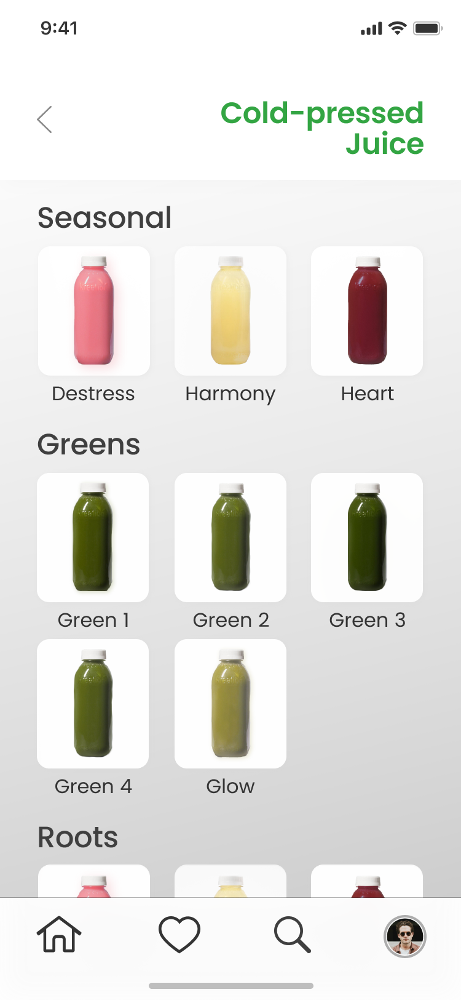
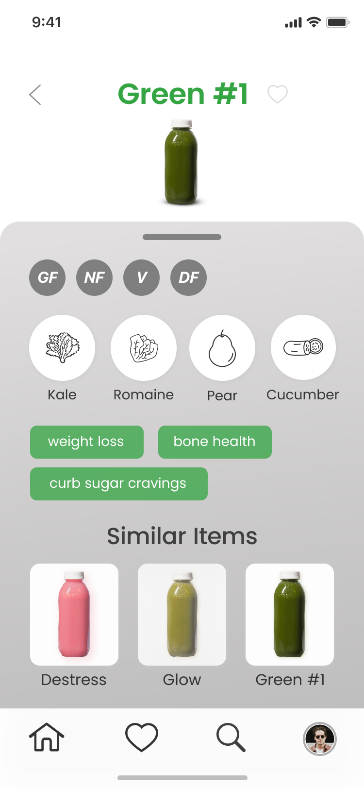

Designing an app for LA's juice fans.
I worked alongside Kreation and a back-end developer to design their iOS app experience. The project started out as a small experiment in the digital space, and hopefully willl continue to be an app with more functionality. Explore the case study to learn more about this exciting project.
- UX Design
- Visual Design
- Branding & Identity

Roles
- Competitive Analysis
- User Flows
- User Stories
- Wireframes
- High Fidelity Mockups
Deliverables
- Figma
- Sketch
- InVision
- Adobe Photoshop
- Adobe Illustrator
Tools
Overview
Kreation wanted an MVP app to get a sense of where we would be able to take their digital presence in the future. This project was intended more as a showcase of visual design rather than a robust app experience. While the functionality is limited now, I designed the app with growth and scalability in mind.
Problem
The brand is looking to expand its digital presence and wanted to start that process with a mobile app. Eventually, they would like the mobile app to translate into an in-store tablet experience for customers.
Solution
The solution is an elegant, user-friendly mobile experience that maintains the Kreation visual style and brand voice. Users are able to view the entire menu for the to-go items in the Kreation store, and from there see the ingredients and health benefits for a given item
Brand Identity
Since I was working with an existing brand style, the range of visual design on this project was more limited. This framework forced me to be even more creative because I wanted to accomplish two goals simultaneously: translate the existing brand style onto the app faithfully, and visually elevate the brand toward a more contemporary feeling.
User Stories
After meeting with key stakeholders for the app, I wrote out the user stories for the app. I prioritized by high, medium, and low with the intention of using the high-priority stories for the MVP. Features such as account creation, favoriting, and purchasing items were important but required a lot of engineering work. For the high-priority stories, I chose things that were easy from both a design and engineering perspective.
| I want to... | so that I can... |
|---|---|
| see all drinks / food items in the grap-and-go container | find a juice that I like. |
| see all of the ingredients in a juice / food item | know what I'm consuming. |
| see gluten-free, vegan, dairy-free, and nut-free symbols | find a juice tailored to my needs. |
| see the juice's / food item's health benefits | understand the benefits of different fruits and vegetables. |
| see similar juices / food items | decide which one I like the best. |
| see all food items in the grab-and-go container | find something to eat that is avaiable quickly. |
| search for an item | in case there is a juice I know by name. |
| return to the main menu easily | get out of whatever page of the app I'm on in case I get lost. |
| see updates from Kreation on the home page | know when new products are launched or new locations are opened. |
User Flows
In order to organize the user journey within the app and know how many screens I would design, I made a series of simple user flows. For this set of user flows, each end destination is the product detail page.
Going into product detail:
Getting Ideas onto Paper
Now that the information architecture was outlined, I was ready to start sketching out different interfaces. I used the "4-up" method which is a way to quickly iterate on four different views of the same screen. The intention is to get out as many ideas as possible in a short amount of time. From this practice, I would pick the layout that best displayed the given information and would then iterate on this screen. Using pen and paper is a great way to quickly throw away design ideas in search of something more efficient and user-oriented.
Testing with Paper
After getting my rough sketches out, I made more precise sketches that would ultimately turn into wireframes. The advantage of high-fidelity sketches is that these allowed me to get feedback from the engineer I was working with early on in the design process. Iterating on some of my designs based on his feedback allowed us to save time in the mockup and development stage.
Wireframes and Further Testing
After making my wireframes, I used the prototype tool on Figma to share the wireframes with potential users. Based on this round of user testing, I had a few key pieces of feedback:
- Users won't want to keep going into categories within categories. It would be more helpful to have more items available on a single screen.
- Users want to be reassured about the ingredients and health effects of their food.
- Users want to see similar items because it makes it seem like there are many options available.
View of the home page
View of the entire menu
View of the product detail page
Final Product
The final Kreation product is a culmination of user research, testing, and visual design. After multiple iterations, I created an MVP product that solves the initial problem: connect consumers with the items they're looking for at Kreation. With the app, users will have the same experience as reading a label on a Kreation bottle or on a food item.
Key Features
View of the home page
View of the entire menu
View of the product detail page
